|Elite|Efficient|Evolving
Welcome to TRPPLE.E.ELECTRONICS where you get to comprehend:
Electrical sensors are devices that detect and measure electrical parameters like current and voltage, converting them into signals for monitoring, control, and automation. They are essential for safety, efficiency, and precision in engineering systems.
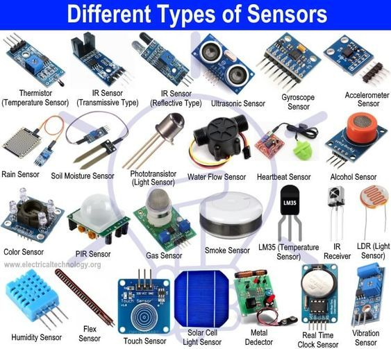A capacitor is a passive two-terminal electronic component that stores electrical energy in an electric field. The effect of a capacitor is known as capacitance. While some capacitance exists between any two electrical conductors in proximity in a circuit, a capacitor is a component designed to add capacitance to a circuit.
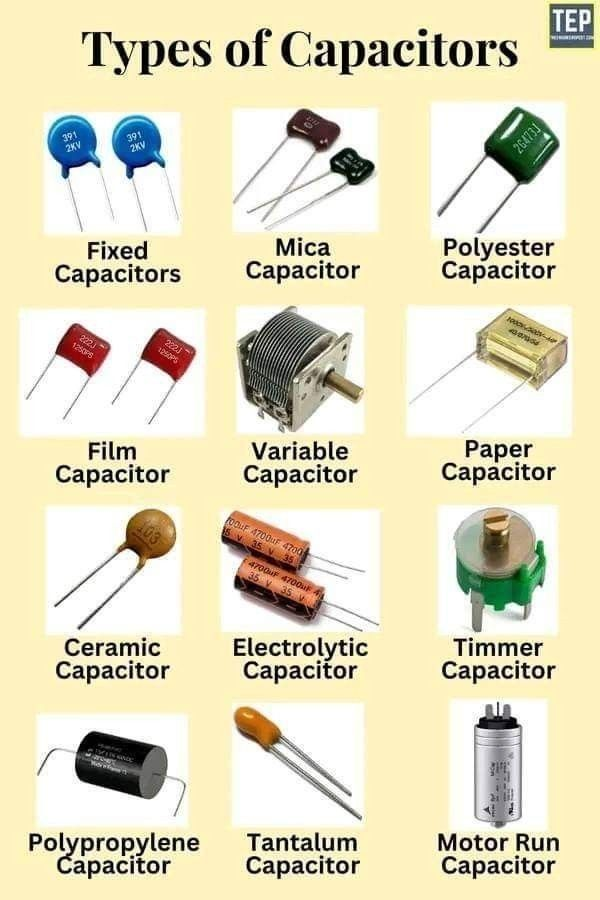A motherboard is the main printed circuit board (PCB) in a computer. It is also known as the mainboard, system board, baseboard, planar board, or logic board (in Apple computers). The motherboard is the central hub that connects all the components of a computer together, allowing them to communicate and work together.
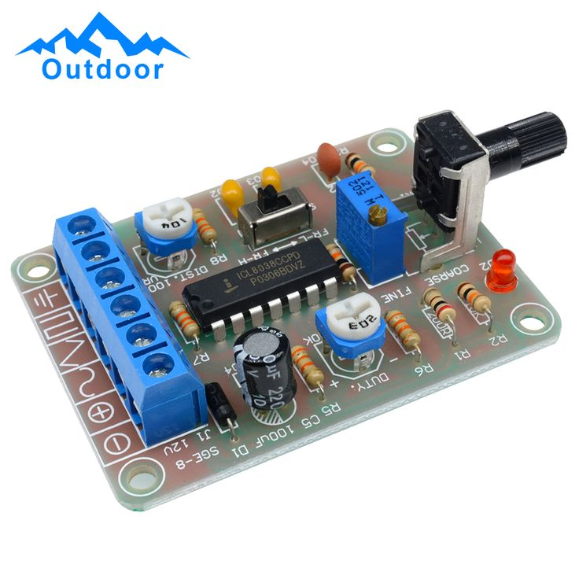

screwdriver is a tool used to drive screws into materials.
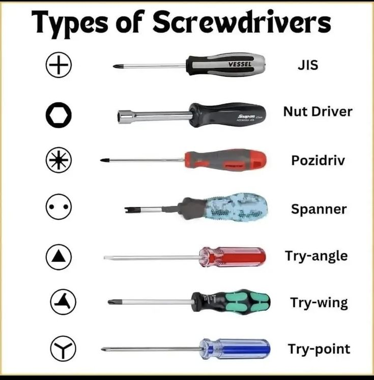An audio plug is a connector used to connect audio equipment, such as headphones, speakers, or microphones, to a device that processes or amplifies sound.
s 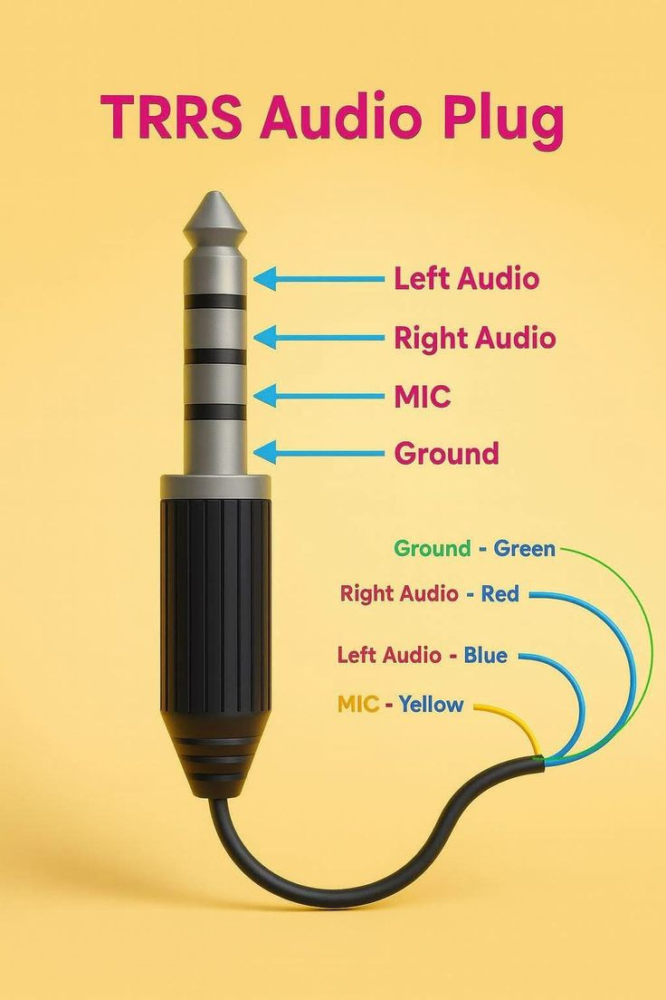 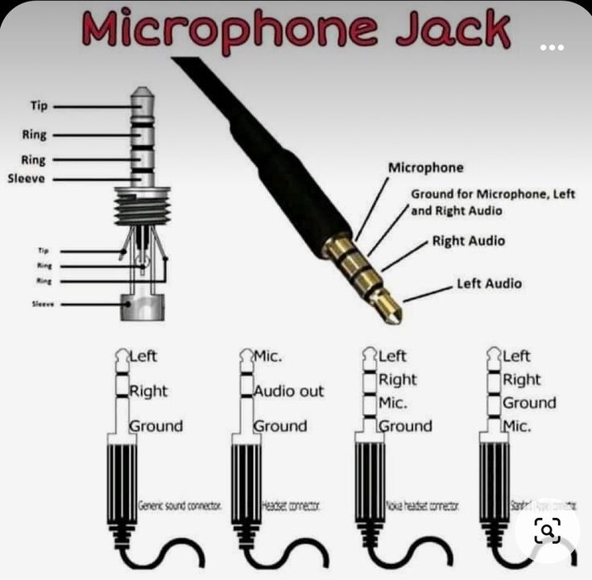
In electronics, a port is a physical or virtual interface that allows communication between different devices or systems. Ports can be used to connect peripherals, transfer data, or provide power to devices.
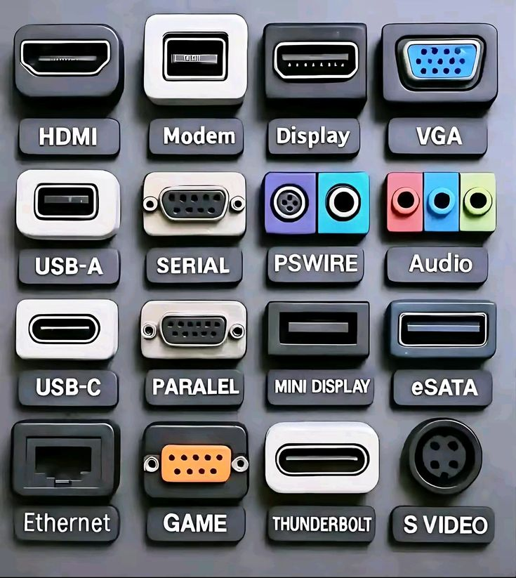Solder is a fusible metal alloy used to join electronic components to a circuit board or other conductive materials. It is commonly used in electronics assembly and repair.
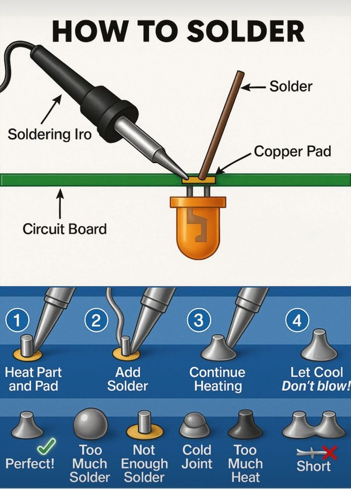
A switch is an electrical component that can open or close a circuit, allowing or interrupting the flow of electricity. Switches are used to control the operation of electrical devices and systems.
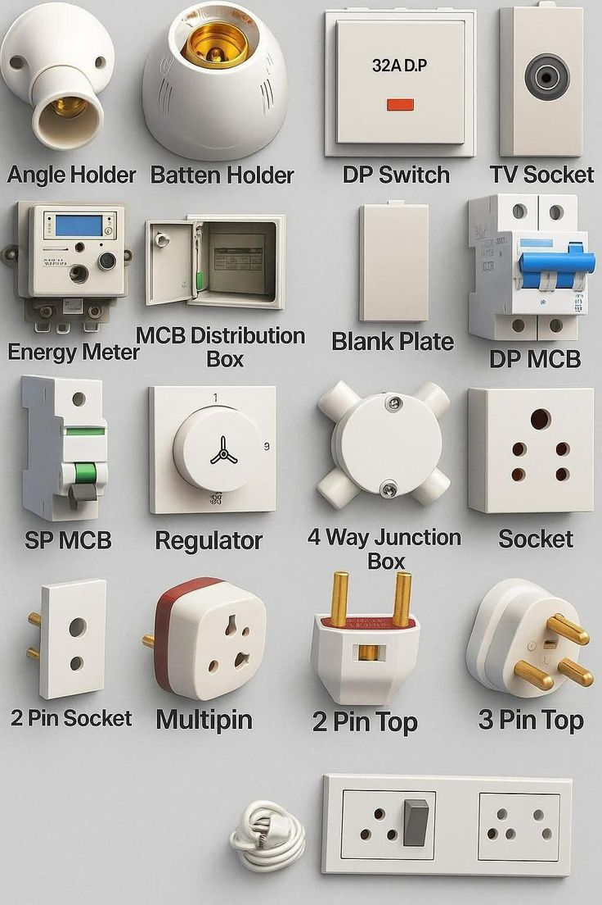
A fuse is a safety device that protects electrical circuits from overcurrent or short circuits. It consists of a metal wire or strip that melts when the current exceeds a certain level, breaking the circuit and preventing damage to the equipment.

Safety electrical equipment refers to devices and tools designed to protect individuals from electrical hazards and ensure safe handling of electrical systems. These equipment help prevent accidents, injuries, and damage caused by electrical faults or mishandling.
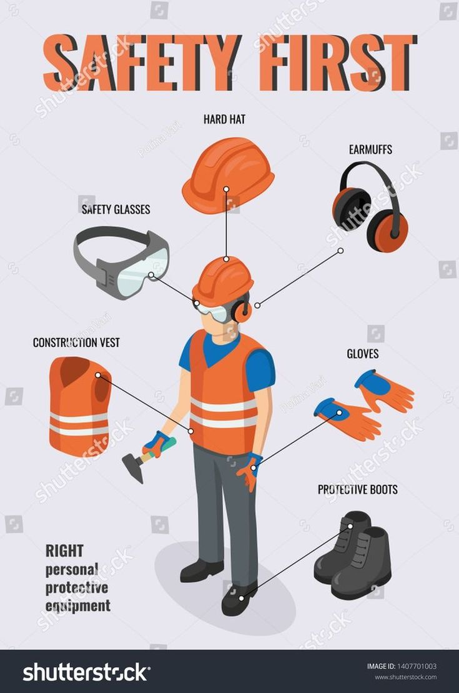
A multimeter is an electronic measuring instrument that combines several measurement functions in one unit. A typical multimeter can measure voltage, current, and resistance. Multimeters can be used to troubleshoot electrical problems in a wide array of industrial and household devices such as electronic equipment, motor vehicles, and household appliances.
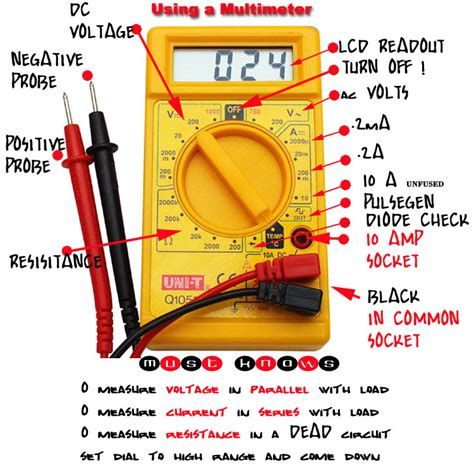.A resistor is a passive two-terminal electrical component.- A resistor is a passive electrical component that opposes the flow of current in a circuit. - Its main purpose is to control voltage and current levels, protect components, and divide signals.
.A motor is a machine that converts electrical energy into mechanical energy.
A battery is a device that stores chemical energy and converts it into electrical energy. It consists of one or more electrochemical cells that produce a voltage.
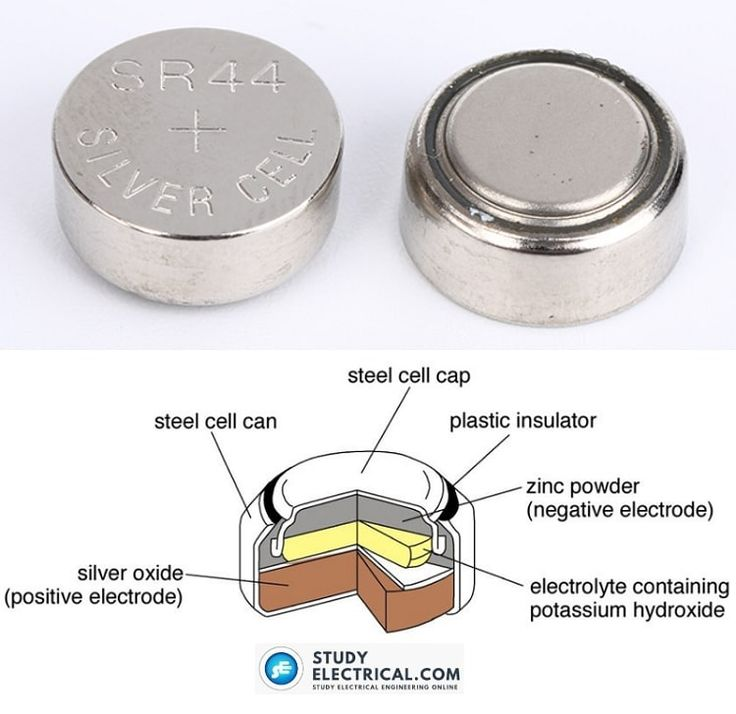 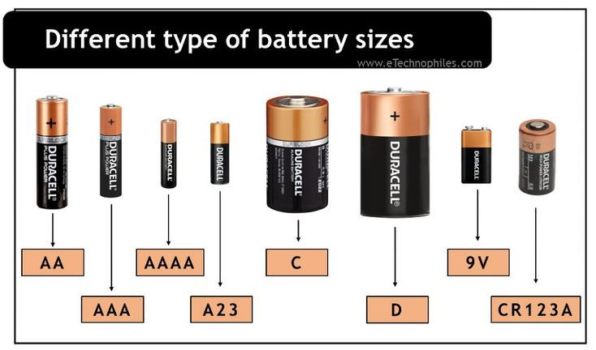
This is the simplest way how a multimeter functions and its various parts explained.
This video explains how to wire a plug step by step.
This video explains the various house wiring materials with images and their names.
click here to watch the video